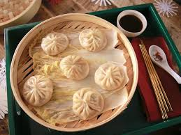

Dumplings

Description
Dumplings are a broad class of dishes that consist of pieces of cooked
dough, often wrapped around a filling. The dough can be based on bread, wheat or other flours, or potatoes, and it may be filled with meat, fish, tofu, cheese, vegetables, or a combination. Dumplings may be prepared using a variety of cooking methods and are found in many world cuisines.
Ingredients
- Flour
- Baking Powder
- White Sugar
- Salt
- Butter or Margarine
- Milk
Steps
- Gather the ingredients.
- Stir together flour, baking powder, sugar, and salt in a bowl.
- Cut in butter until mixture is crumbly. Stir in milk and mix until a batter forms that is thick enough to be scooped with a spoon. Allow batter to rest for 3 to 5 minutes.
- Drop batter by spoonfuls into boiling stew or soup. Cover and simmer without lifting the lid for 15 minutes. Serve.
- Serve hot and enjoy!